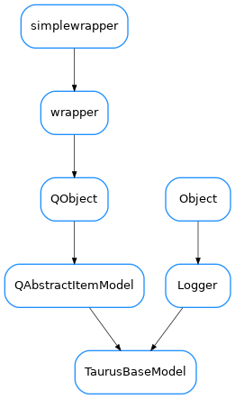

TaurusBaseModel¶

-
class
TaurusBaseModel(parent=None, data=None)[source]¶ Bases:
PyQt5.QtCore.QAbstractItemModel,taurus.core.util.log.LoggerThe base class for all Taurus Qt models.
-
ColumnNames= ()¶
-
ColumnRoles= ((),)¶
-
DftFont= <PyQt5.QtGui.QFont object>¶
-
TaurusBaseModel.index(self, int, int, parent: QModelIndex = QModelIndex()) -> QModelIndex[source]
-